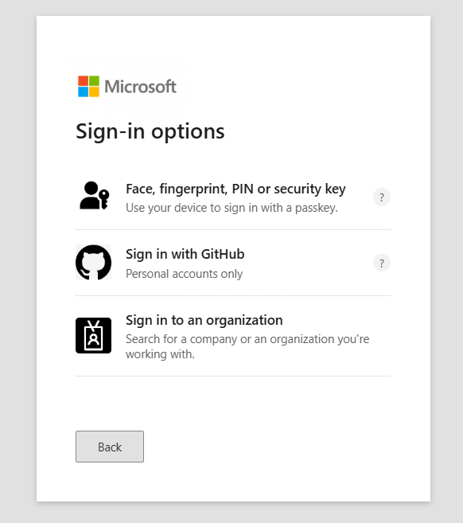

The evolution of social engineering attacks has reached new levels of sophistication with custom evil portals that perfectly mimic legitimate services. This project explores the development of convincing captive portals designed to harvest credentials from major platforms like Google and Microsoft, demonstrating how easily users can be deceived by professional-quality phishing infrastructure.
Table of Contents
- Project Overview
- Research Motivation
- Development Approach
- Portal Design Philosophy
- Google Authentication Portal
- Microsoft Authentication Portal
- Technical Implementation
- Deployment Strategy
- Social Engineering Impact
- Defense Strategies
Project Overview
This research project focused on developing highly convincing evil portals that replicate the look, feel, and functionality of legitimate authentication services. The goal was to understand how sophisticated social engineering attacks can be crafted and deployed, ultimately enhancing red team capabilities and defensive awareness.
Research Motivation
Building upon previous WiFi penetration testing experience, I recognized the need to advance red teaming capabilities beyond simple WiFi credential harvesting to more sophisticated social engineering techniques.
Evolution from Basic WiFi Hacking
While traditional WiFi hacking focuses on capturing network credentials, modern red team operations require more sophisticated approaches:
Advanced Social Engineering Objectives:
- Multi-Platform Targeting: Harvest credentials from major cloud providers
- Legitimate Appearance: Create indistinguishable replicas of real services
- Behavioral Psychology: Exploit user trust in familiar interfaces
- Scalable Operations: Deploy against multiple targets simultaneously
- Intelligence Gathering: Collect valuable organizational credentials
The Developer Challenge
Despite having no formal development background, this project required creating professional-quality web applications. AI-assisted development became crucial in bridging the technical skill gap:
# Development challenges overcome:
# - Frontend design and responsive layouts
# - Backend authentication flow simulation
# - Database integration for credential storage
# - Real-time data processing and logging
# - Cross-platform compatibility testingDevelopment Approach
The development process focused on creating pixel-perfect replicas of major authentication platforms while maintaining functionality for credential harvesting.
Technology Stack
# Core technologies utilized:
# Frontend: HTML5, CSS3, JavaScript
# Backend: Flask (Python web framework)
# Database: JSON file storage for simplicity
# Deployment: Local hosting with traffic redirection
# AI Assistance: ChatGPT, Perplexity for code generationDesign Principles
Key Development Principles:
- Pixel-Perfect Accuracy: Exact replication of target platform interfaces
- Responsive Design: Optimal display across all device types
- Performance Optimization: Fast loading times to avoid suspicion
- Error Handling: Realistic error messages and recovery flows
- Data Collection: Comprehensive logging of all user interactions
Portal Design Philosophy
Creating convincing evil portals requires understanding user psychology and leveraging familiar design patterns to reduce suspicion.
Trust Exploitation Mechanisms
The portals exploit several psychological factors that make users vulnerable to credential theft:
- Familiarity Bias: Users trust interfaces that look exactly like services they use daily
- Convenience Expectation: Public WiFi often requires authentication through major platforms
- Authority Appearance: Official-looking interfaces reduce security awareness
- Time Pressure: Users want quick internet access and skip security verification
User Experience Optimization
# UX elements that increase success rates:
# - Seamless redirection from WiFi connection
# - Immediate recognition of familiar login interfaces
# - Progressive disclosure of authentication steps
# - Realistic loading animations and feedback
# - Error handling that maintains user engagementGoogle Authentication Portal
The Google portal replicates the complete Google Sign-In experience, from initial account selection through multi-factor authentication prompts.
Visual Design Achievement
The Google portal achieves near-perfect visual fidelity with the authentic Google authentication experience:
The initial interface presents users with familiar Google branding and account selection options, immediately establishing trust and legitimacy.
The password entry screen maintains Google's signature clean design while capturing credentials in real-time.
Authentication Flow Simulation
# Simulated Google authentication workflow:
# 1. Account identification and email validation
# 2. Password entry with realistic validation
# 3. Two-factor authentication prompt (if enabled)
# 4. Account recovery options presentation
# 5. Successful authentication simulation
# 6. Redirect to intended destination or error handlingAdvanced Features
Google Portal Capabilities:
- Multi-Step Authentication: Replicates Google's progressive disclosure
- Account Recovery: Simulates forgot password workflows
- 2FA Integration: Captures secondary authentication codes
- Mobile Optimization: Responsive design for smartphone users
- Language Support: Multiple language options for broader targeting
Microsoft Authentication Portal
The Microsoft portal replicates the Microsoft 365 and Azure AD authentication experience with equal attention to visual and functional accuracy.
Microsoft Design Replication
The Microsoft portal achieves professional-quality replication of Microsoft's authentication interfaces:
The Microsoft sign-in interface incorporates the latest design elements from Microsoft's authentication system, including proper typography, spacing, and branding.
Enterprise Authentication Features
# Microsoft enterprise authentication simulation:
# 1. Organizational login detection
# 2. Azure AD domain validation
# 3. Single Sign-On (SSO) simulation
# 4. Multi-factor authentication challenges
# 5. Conditional access policy handling
# 6. Device registration promptsBusiness-Focused Targeting
Microsoft Portal Advantages:
- Enterprise Focus: Targets high-value business credentials
- Domain Integration: Simulates organizational authentication flows
- Office 365 Access: Appears to provide access to business applications
- Azure Integration: Replicates cloud service authentication
- Conditional Access: Mimics enterprise security policies
Technical Implementation
The backend infrastructure supports both portals with robust credential collection, storage, and management capabilities.
Flask Application Architecture
# Core Flask application structure:
from flask import Flask, render_template, request, jsonify
import json
from datetime import datetime
app = Flask(__name__)
@app.route('/')
def portal_selection():
# Redirect to appropriate portal based on user agent
return render_template('portal_selection.html')
@app.route('/google')
def google_portal():
return render_template('google_auth.html')
@app.route('/microsoft')
def microsoft_portal():
return render_template('microsoft_auth.html')
@app.route('/capture', methods=['POST'])
def capture_credentials():
# Store captured credentials in JSON format
credential_data = {
'timestamp': datetime.now().isoformat(),
'platform': request.form.get('platform'),
'username': request.form.get('username'),
'password': request.form.get('password'),
'ip_address': request.remote_addr,
'user_agent': request.headers.get('User-Agent')
}
with open('captured_creds.json', 'a') as f:
json.dump(credential_data, f)
f.write('\n')
return jsonify({'status': 'success'})Real-Time Data Collection
The credential harvesting system captures comprehensive user information:
# Example captured credential structure:
{
"timestamp": "2025-09-16T15:30:45.123456",
"platform": "google",
"username": "victim@company.com",
"password": "SecurePassword123!",
"ip_address": "192.168.1.100",
"user_agent": "Mozilla/5.0 (Windows NT 10.0; Win64; x64)...",
"session_id": "sess_abc123def456",
"geolocation": "Approximate location data",
"device_info": "Desktop Windows Chrome",
"referrer": "cafe-wifi-portal"
}Security Evasion Techniques
Anti-Detection Measures:
- SSL Certificate Spoofing: Valid certificates for legitimate appearance
- Domain Masquerading: Similar domains to official services
- Traffic Encryption: HTTPS to prevent interception
- Log Sanitization: Remove traces of portal infrastructure
- Geolocation Masking: Hide true server locations
Deployment Strategy
The portal deployment leverages public WiFi environments where users expect authentication through major platforms.
Access Point Configuration
# "OpenWiFi" access point setup:
# SSID: OpenWiFi (generic, attractive name)
# Security: Open (no password required)
# Captive Portal: Enabled with automatic redirection
# DNS Redirection: All traffic routes to local server
# DHCP: Assigns IP addresses with custom DNS serversTraffic Redirection Mechanism
Users connecting to the "OpenWiFi" access point are automatically redirected through carefully crafted routing rules:
# Traffic redirection workflow:
# 1. User connects to OpenWiFi access point
# 2. DHCP assigns IP with custom DNS server
# 3. Any web request triggers captive portal detection
# 4. User redirected to portal selection page
# 5. Platform-specific portal loads based on user choice
# 6. Credentials captured during authentication attempt
# 7. User receives "authentication error" or success pageLocation-Based Targeting
Optimal Deployment Locations:
- Coffee Shops: High foot traffic and WiFi dependency
- Airports: Users need immediate internet access
- Hotels: Guests expect guest WiFi with authentication
- Conference Centers: Business users with valuable credentials
- Shopping Centers: Mixed demographic targeting
Social Engineering Impact
This project reveals the disturbing ease with which sophisticated social engineering attacks can be crafted and deployed against unsuspecting users.
User Vulnerability Analysis
The research demonstrates several critical factors that make users vulnerable to advanced phishing attacks:
Attack Success Factors
# Factors contributing to attack success:
# - Visual indistinguishability from legitimate services
# - Contextually appropriate presentation (public WiFi)
# - Exploitation of convenience expectations
# - Professional-quality user experience design
# - Real-time credential validation simulationOrganizational Risk Assessment
- Credential Compromise: Direct access to cloud services and corporate systems
- Privilege Escalation: Harvested admin credentials provide elevated access
- Lateral Movement: Valid credentials enable internal network traversal
- Data Exfiltration: Cloud service access enables data theft
- Persistent Access: Long-term compromise through credential reuse
The Innocence of the Digital World
This project starkly illuminates the innocence and vulnerability of average internet users when confronted with sophisticated social engineering attacks:
Defense Strategies
Protecting against sophisticated evil portal attacks requires multi-layered defenses combining technology, education, and policy.
Technical Countermeasures
Primary Technical Defenses:
- Certificate Validation: Always verify SSL certificates for legitimacy
- URL Inspection: Check domain names carefully before entering credentials
- Multi-Factor Authentication: Use hardware tokens or authenticator apps
- VPN Usage: Encrypt traffic through trusted networks
- DNS Filtering: Block known malicious domains and IPs
User Education Programs
# Critical user awareness topics:
# - Recognition of legitimate vs. suspicious authentication requests
# - Certificate verification procedures
# - Safe public WiFi usage practices
# - Password manager adoption and usage
# - Incident reporting proceduresOrganizational Policies
- Public WiFi Restrictions: Prohibit business credential use on public networks
- VPN Mandates: Require VPN usage for all remote connections
- Regular Security Training: Ongoing phishing and social engineering awareness
- Incident Response: Clear procedures for suspected credential compromise
- Zero Trust Architecture: Never trust, always verify for all access requests
Detection and Response
# Monitoring and detection strategies:
# - Unusual login locations and times
# - Multiple failed authentication attempts
# - Suspicious DNS queries and traffic patterns
# - Certificate warnings and SSL anomalies
# - User reports of unexpected authentication requestsEthical Considerations and Responsible Disclosure
The development of sophisticated attack tools carries significant ethical responsibilities that must be carefully managed.
Ethical Framework
Responsible Development Practices
- Controlled Environments: All testing performed in isolated, authorized environments
- No Real Targeting: No deployment against actual users without explicit consent
- Data Protection: Immediate destruction of any captured test data
- Knowledge Sharing: Educational use to improve organizational defenses
- Legal Compliance: Adherence to all applicable laws and regulations
Future Research Directions
This project opens several avenues for future research into advanced social engineering defenses and detection mechanisms.
Advanced Detection Systems
# Next-generation detection research areas:
# - AI-powered phishing detection algorithms
# - Behavioral analysis of authentication patterns
# - Real-time certificate validation systems
# - Network traffic analysis for portal detection
# - User interaction pattern analysisDefensive Technology Development
- Browser Extensions: Real-time phishing detection and warning systems
- Mobile Applications: WiFi network validation and security assessment
- Enterprise Solutions: Centralized portal detection and response systems
- AI Integration: Machine learning for evolving threat detection
Conclusion
The development of custom evil portals reveals the sophisticated level of social engineering attacks that modern organizations and individuals face. The ability to create pixel-perfect replicas of major authentication platforms, combined with strategic deployment in public WiFi environments, demonstrates how easily user trust can be exploited.
This research project, while conducted for educational and defensive improvement purposes, highlights the urgent need for enhanced user education, improved technical defenses, and comprehensive organizational security policies. The innocence of the average internet user, when confronted with professionally crafted deception, creates systematic vulnerabilities that require immediate attention.
The techniques demonstrated here represent just one facet of modern social engineering capabilities. As AI-assisted development makes sophisticated attack creation more accessible, the cybersecurity community must respond with equally advanced defensive measures and comprehensive user protection strategies.